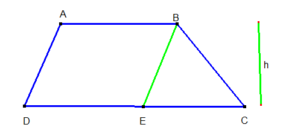

ÁREA DO TRAPÉZIO
Para calcular a área de um trapézio qualquer, somamos os comprimentos da base maior com o da base menor, multiplicamos o resultado da soma pela altura do trapézio e dividimos o produto por dois

Clique aqui para caucular a área do trapézio